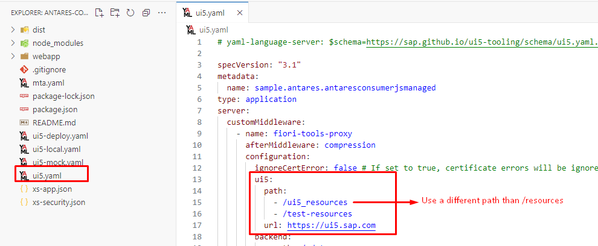

UI5 Antares
The UI5 Antares is a custom SAPUI5 library comprising useful classes and methods, specifically designed to streamline the development process when working with OData V2 services.
Info
UI5 Antares is developed in TypeScript and is compatible with both SAPUI5 JavaScript and SAPUI5 TypeScript applications.
Attention
This library utilizes the classes and components of the SAPUI5 framework without modifying or copying the source code, which is licensed under the SAP Developer License. It is important to carefully review the SAP Developer License terms and conditions, as well as adhere to the restrictions set forth therein when using the UI5 Antares library.
Features
- OData V2 metadata-based dialog and Simple Form - Smart Form generation for CRUD operations
- OData V2 metadata-based object page and Simple Form - Smart Form generation for CRUD operations
- Value Help Dialog generation
- User input validations/mandatory checks
- HTTP request handling for OData V2 CRUD operations
- Promisified OData V2 classes based on the sap.ui.model.odata.v2.ODataModel class
Auto Generated Dialog

Auto Generated Object Page

Core Classes
The UI5 Antares library offers a comprehensive set of core classes, as outlined below.
- Entry Create
- Entry Update
- Entry Delete
- Entry Read
- Value Help
- Fragment Class
- Promisified OData V2 Classes (OData Create, OData Update, OData Delete, OData Read)
Please refer to the Planned Features section to learn about the features that will be included in the next releases.
Prerequisites
- Node.js
- NPM
- UI5 Tooling (global or local)
To make sure they are available on your machine, try running the following command.
npm -v && node -v
10.5.1
v20.11.0
npx ui5 -v
3.9.2
ui5 -v
3.9.2
Versioning
The UI5 Antares and SAPUI5 versions are directly related. The SAPUI5 version used can be determined by ignoring the last three digits of the UI5 Antares version. Please note that the last three digits of the UI5 Antares version increase sequentially after bug fixes or new features.
Tip
Please ensure that you install the version that corresponds to the version of your SAPUI5/Fiori Elements application.
Info
In the event that the patch component of the SAPUI5 version is 0, the UI5 Antares patch component will commence with 999, due to the fact that the NPM does not permit leading zeros in the version components.
Example
To illustrate, if the SAPUI5 version is 1.124.0, the UI5 Antares version will be 1.124.999001. The final three digits will be incremented with each bug fix or new feature.
Examples
Please refer to the examples of versioning below for further information.
Note
Please note that the versions shown in the example below may not be available.
| UI5 Antares Version | SAPUI5 Version | Description |
|---|---|---|
| 1.123.1002 | 1.123.1 | The latest UI5 Antares version corresponding to the SAPUI5 1.123.1 version |
| 1.123.1001 | 1.123.1 | The previous UI5 Antares version corresponding to the SAPUI5 1.123.1 version |
| 1.96.32001 | 1.96.32 | The latest UI5 Antares version corresponding to the SAPUI5 1.96.32 version |
| 1.84.999001 | 1.84.0 | The latest UI5 Antares version corresponding to the SAPUI5 1.84.0 version |
Supported SAPUI5 Versions
The table below outlines the currently supported and planned SAPUI5 versions.
Info
Initially, UI5 Antares was released to support version 1.123.1. However, development will also be conducted for versions with long-term maintenance, as outlined in the SAPUI5 Version Overview
| Latest UI5 Antares Version | SAPUI5 Version | Status |
|---|---|---|
| 1.124.1003 | 1.124.1 | Available |
| 1.124.999006 | 1.124.0 | Available |
| 1.123.2003 | 1.123.2 | Available |
| 1.123.1004 | 1.123.1 | Available |
| 1.120.15003 | 1.120.15 | Available |
| 1.120.14003 | 1.120.14 | Available |
| 1.120.13003 | 1.120.13 | Available |
| 1.120.12003 | 1.120.12 | Available |
| 1.120.11003 | 1.120.11 | Available |
| 1.120.1014 | 1.120.1 | Available |
| 1.108.32003 | 1.108.32 | Available |
| 1.108.31003 | 1.108.31 | Available |
| 1.108.30003 | 1.108.30 | Available |
| 1.108.23003 | 1.108.23 | Available |
| 1.96.33003 | 1.96.33 | Available |
| 1.96.32003 | 1.96.32 | Available |
| 1.96.31003 | 1.96.31 | Available |
| 1.96.30003 | 1.96.30 | Available |
| 1.96.25004 | 1.96.25 | Available |
| 1.120.* | 1.120.* | Planned |
| 1.108.* | 1.108.* | Planned |
| 1.96.* | >1.96.25 | Planned |
NPM Package Tags
Should the versioning be unclear, a special tag can be used during the installation process. The most recent version of UI5 Antares that corresponds to a specific SAPUI5 version will always include the following tag.
Tag Naming Convention: ui5-${1}-${2}-${3}-latest
- ${1} = The major component of the SAPUI5 version
- ${2} = The minor component of the SAPUI5 version
- ${3} = The patch component of the SAPUI5 version
To illustrate, if your SAPUI5 application is version 1.124.0, you may wish to consider using the following command.
npm install --save-exact ui5-antares@ui5-1-124-0-latest
Tip
The --save-exact argument ensures that no additional caret or tilde is added to the version in the package.json file.
Installation
Warning
Prior to installation, please review the prerequisites and versioning information.
To install the library, please run the following command in the directory where the package.json file of your SAPUI5/Fiori Elements application is located. This file is typically found in the root directory of a SAPUI5/Fiori Elements application.
Tip
In the command below, please replace version with the UI5 Antares version that corresponds to the version of your SAPUI5/Fiori Elements application. For example, applications running with SAPUI5 version 1.123.1 should run the following command: npm install ui5-antares@1.123.1001 or npm install ui5-antares@ui5-1-123-1-latest
Note
Please note that if you are using UI5 Tooling v3, there is no need to add ui5-antares to the ui5.dependencies in your application's package.json file.
npm install ui5-antares@version
Add "ui5.antares": {} to the "sap.ui5"."dependencies"."libs" section of your application's manifest.json file.
{
...
"sap.ui5": {
...
"dependencies": {
...
"libs": {
"sap.m": {},
"sap.ui.core": {},
...
"ui5.antares": {}
}
}
}
}
Add "ui5.antares": "./resources/ui5/antares" to the "sap.ui5"."resourceRoots" section of your application's manifest.json file.
{
...
"sap.ui5": {
...
"resourceRoots": {
"ui5.antares": "./resources/ui5/antares"
}
}
}

Add the --all argument to the build script in your application's package.json file. This argument guarantees that all dependencies are included in the application build.
{
...
"scripts": {
"build": "ui5 build --all --config=ui5.yaml --clean-dest --dest dist"
}
}

To ensure that UI5 Antares is included as a dependency in your application, please use the following command.
npx ui5 tree
ui5 tree

In order to include dependencies in your application's deployment, you will need to add the includeDependencies: true flag to the configuration of the ui5-task-zipper task in your application's YAML file.
Attention
Please note that without this configuration, the UI5 Antares library files will not be included in the .zip file that will be deployed into the target system.
TypeScript
If you are developing your SAPUI5/Fiori Elements application with TypeScript, you must add "./node_modules/ui5-antares" to the compilerOptions.typeRoots array in your application's tsconfig.json file. This configuration is required to use type declarations of the UI5 Antares.
{
"compilerOptions": {
"typeRoots": [
...
"./node_modules/ui5-antares"
]
}
}
Approuter
If you are deploying your application with a Standalone or Managed Approuter, please add the route below (first route) to your application's xs-app.json file.
Warning
Please note that the Standalone Approuter also has an xs-app.json file. However, this configuration should be carried out on the SAPUI5/Fiori Elements application's xs-app.json file, rather than on the Standalone Approuter's xs-app.json file.
Please be advised that this route must be added before the route (automatically added by the application generator) with "source": "^/resources/(.*)$" and "destination": "ui5" properties in order to load the UI5 Antares from the HTML5 Application Repository instead of the UI5 CDN.
The reason for this configuration is that both the standard UI5 libraries and UI5 Antares utilize the /resources path to load the files.
{
"welcomeFile": "/index.html",
"authenticationMethod": "route",
"routes": [
...
{
"source": "^/resources/ui5/antares/(.*)$",
"target": "/resources/ui5/antares/$1",
"service": "html5-apps-repo-rt",
"authenticationType": "xsuaa"
},
{
"source": "^/resources/(.*)$",
"target": "/resources/$1",
"authenticationType": "none",
"destination": "ui5"
},
{
"source": "^/test-resources/(.*)$",
"target": "/test-resources/$1",
"authenticationType": "none",
"destination": "ui5"
},
{
"source": "^(.*)$",
"target": "$1",
"service": "html5-apps-repo-rt",
"authenticationType": "xsuaa"
}
]
}
Local Start
If you start your application with one of the following commands, UI5 Antares will be loaded automatically, as it is a dependency of your application.
ui5 serve
fiori run
Known Issues
If you load the standard UI5 library on the /resources path using the fiori-tools-proxy middleware of the @sap/ux-ui5-tooling package while starting your application as shown below, the UI5 Antares will not be loaded because it also uses the /resources path.
Info
fiori-tools-proxy redirects all requests coming from the /resources path to the url defined in the configuration.ui5.url property.
Solution 1
Remove the ui5 configuration from the YAML file that is used as the configuration file for the start script (--config argument of ui5 serve or fiori run command).

Modify the src attribute of the sap-ui-bootstrap script in your application's index.html file and load the standard UI5 library from the CDN.

Warning
Please be advised that if you deploy your application to an ABAP repository, you will need to modify the src attribute to "resources/sap-ui-core.js". This is necessary because the server may not have internet access. This change will result in the standard UI5 library being loaded directly from the server instead of from the CDN.
Solution 2
Don't use the /resources path in the ui5 configuration of fiori-tools-proxy on the YAML file that is used as the start script configuration file (--config argument of ui5 serve or fiori run command).

Modify the src attribute of the sap-ui-bootstrap script in your application's index.html file and load the standard UI5 library from the path which is defined in the YAML file.

Warning
Do not forget to change the src attribute back to "resources/sap-ui-core.js" or "https://sapui5.hana.ondemand.com/resources/sap-ui-core.js" before deploying your application.
Planned Features
Please find below a list of features that are scheduled for inclusion in upcoming releases.
| Feature | Supported UI5 Antares Versions | Scope | Description |
|---|---|---|---|
| Deep Create | * | Entry Create | Creating a deep entity on the auto-generated dialog will be possible. When the cardinality is 1-1, the properties of the associated entity will be added into the auto-generated form in a different group. When the cardinality is 1-N, a table will be placed below the auto-generated form |
Change Log
Please see Change Log.
License
This project is licensed under the Apache License 2.0 - see the LICENSE file for details.